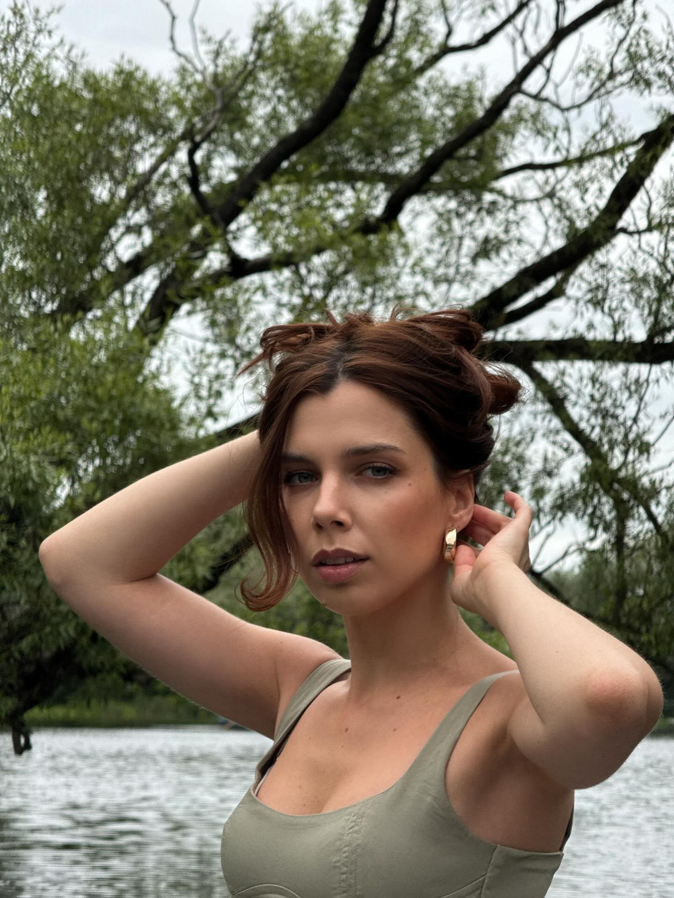

Фотограф
Восемь лет снимаю людей. Верю, что каждый человек красив — нужно лишь поймать правильный момент и свет.
Меня зовут Александра, и я фотограф из Москвы. Начинала с простой «мыльницы» в 16 лет, и с тех пор камера стала неотъемлемой частью моей жизни.
Специализируюсь на портретной и свадебной фотографии. Мне важны не просто красивые кадры, а живые истории — радость, нежность, удивление, первый взгляд.
Работала с российскими и зарубежными изданиями. Участвовала в групповых выставках в Москве и Санкт-Петербурге. В 2022 году выпустила небольшой фотоальбом «Городские лица».
Когда не снимаю — читаю книги по кинематографу, путешествую и ищу необычные локации для будущих проектов.
Навыки